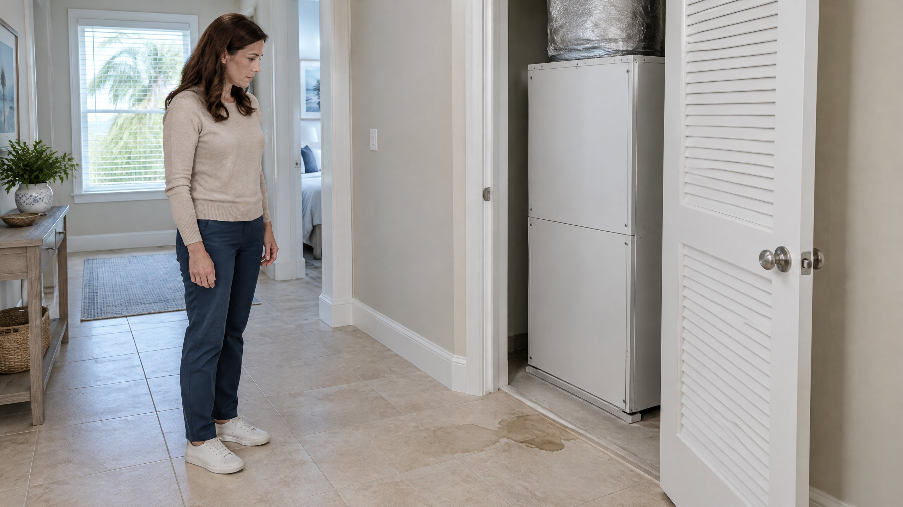

First identify which pan has the water
A cooling system produces condensate: moisture that becomes liquid at the cold indoor coil. PNNL's Building America guidance explains that the primary condensate pan collects this water and directs it to a drain. The pan must keep draining to avoid overflow. [1] Water passing through that collector is different from water accumulating in a larger backup tray beneath the equipment.
A secondary or auxiliary pan is part of the installation's overflow protection. It is not intended to be an extra reservoir that allows a drainage problem to continue. Its location, outlet and water-level controls vary with the equipment and installation. Do not identify a pan solely by its color, material or size.
If the water is visible only by entering an attic, climbing or opening the air handler, leave that identification to the contractor. From an ordinary accessible position, report whether the water is inside the equipment, in a separate tray below it or already on the floor. Do not remove a service panel to get a better answer.
When should cooling be turned off?
Turn cooling off at an accessible thermostat when water is rising in a backup pan, spilling onto building materials or appearing outside the intended drainage path. Request prompt AC repair assessment. PNNL describes the potential for overflowing pans and blocked drains to damage ceilings, floors and walls. ENERGY STAR also identifies water damage as a consequence of a plugged condensate drain. [1] [2]
The question is not simply whether the AC still produces cold air. Cooling performance does not establish that water is leaving the indoor unit properly. Continued cooling can keep producing condensate while the home has an unresolved drainage problem.
If water is near electrical equipment, do not touch the cabinet, wiring or wet controls. Keep people away from the affected area and request assistance. Do not climb into a wet attic or reach above a wet ceiling to stop the leak. Switching cooling off is a precaution; it does not repair the cause or promise that existing water will stop moving immediately.
What if there is only a small amount of water?
A small visible amount does not by itself distinguish normal collection from poor drainage. The useful questions are which pan contains it, whether it is draining and whether the level is changing. PNNL recommends checking for stagnant water, blocked lines, overflowing pans, corrosion and leakage. [1] Those are separate observations, not one universal water-depth test.
This article gives no acceptable depth or waiting period for standing water. A photograph cannot prove that a pan is functioning correctly, especially if the drain connection and equipment configuration are unknown. Water in a backup tray deserves investigation even before it reaches the edge.
If you are unsure whether you are looking at the primary collector or a backup pan, describe the uncertainty to the service team rather than continuing to run cooling to see what happens. Do not pour water into the pan, pull a drain cap or repeat an overflow test.
Does a water-level switch mean the problem is handled?
Some installations have a water-level detection device, often called a float switch, that interrupts operation when water rises. PNNL describes these devices as overflow protection. [1] A shutdown may limit further condensate production, but it does not clear a restriction or establish why water collected.
Do not bypass the device or repeatedly reset cooling to make the house colder. Do not assume a switch is absent or defective because the unit has not stopped; its location and control arrangement need verification. Ask the contractor to check the drainage problem and the protective device together.
A blank display is a separate symptom. Our blank thermostat and no-start article explains why the screen alone cannot confirm a drainage shutdown. Conversely, a normal display is not proof that an accumulating pan can be ignored.
What information helps without disturbing the equipment?
Record where the water first appeared and when you noticed it. Note whether cooling was operating, whether the level appeared to rise and whether a separate outlet or ceiling mark became wet. Take a photograph only from an ordinary accessible position. Describe observations as observations: “water in the tray below the cabinet” is more useful than an unconfirmed diagnosis of a clogged line.
Tell the service team whether the drain was recently serviced and whether a switch or thermostat message appeared. If a visible normal discharge outlet is accessible from ground level, report its usual pattern and any change without disconnecting anything. Water leaving one outlet does not establish that every part of the drainage system is working correctly.
Keep stored belongings away from affected water when you can do so without approaching wet equipment. Record visible damage for follow-up. Building-material drying or restoration is a separate need from getting the AC drain to function; completing an HVAC repair does not establish that a wet ceiling or wall has dried.
What should be checked before cooling resumes?
The contractor should identify the pan and water path, establish why water accumulated and confirm drainage after the appropriate correction. PNNL's retrofit guidance calls for checking the primary drain for blockage and inspecting the pan for corrosion and leakage. [1] A leaking pan and an obstructed outlet require different work.
On The Way offers condensate drain cleaning for drainage obstructions. Do not assume that service is the complete answer before the source of the water is established. If the issue returns after clearing, use our recurring drain-line clog guide for the broader investigation; this article is about the immediate decision to keep operating.
Include drainage inspection in future AC maintenance. ENERGY STAR includes the condensate drain in a typical check-up. [2] In Tampa and North Tampa, drainage deserves attention whenever the system is removing moisture, not only because the calendar says summer. Neither cooler weather nor a recent maintenance visit rules out a new water problem.
Frequently Asked Questions
Is water in the primary AC drain pan always a problem?
No. The primary pan collects condensate and directs it to a drain. The concern is water that remains stagnant, rises, leaks or does not leave through the intended path. The pan's role and actual drainage must be established; there is no universal acceptable depth in this article.
Can I leave the AC running if the backup pan is not full?
Do not use the remaining space as permission to continue an overflow trial. Water accumulating in a backup tray deserves assessment before it spills. Turn cooling off at an accessible thermostat and request assistance rather than waiting for the tray to fill.
Will turning the AC off stop the water immediately?
Not necessarily. Turning cooling off limits further operation but does not remove existing water or repair the cause. Water already collected may continue moving. Report active leakage and avoid wet equipment while arranging assistance.
Should I bypass the float switch to get cooling back?
No. A water-level shutdown is overflow protection, not a repair. Have the cause of the rising water and the device's operation checked together. Do not bypass the switch or repeatedly reset the system to recreate the condition.
Editorial Source Review & Publisher
Published by On The Way Heating & Air. This article uses national-laboratory and federal maintenance guidance to explain a homeowner operating decision. It does not identify a pan, verify drainage or diagnose a leak from a description. The equipment instructions and actual installation determine the assessment and correction.
Sources
- PNNL Building America Solution Center — HVAC has Corrosion-Resistant Condensate Drain Pan. Primary collection, overflow protection, drainage and pan-condition inspection. No code dimensions or legal requirements are asserted here.
- ENERGY STAR — Maintenance Checklist. Condensate-drain inspection and the water-damage concern from a plugged drain.